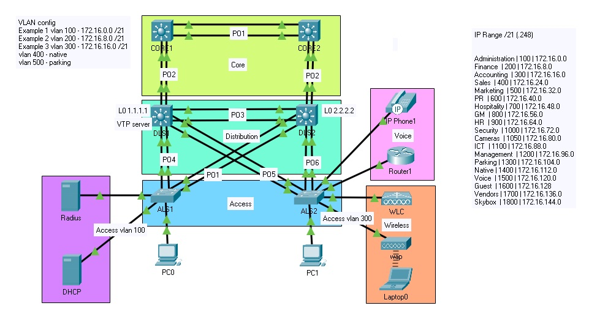
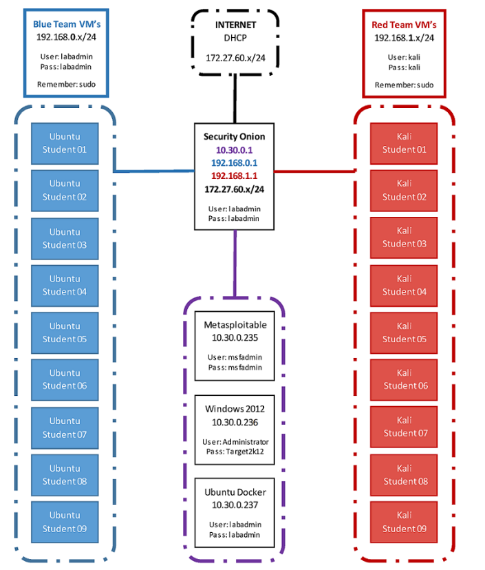
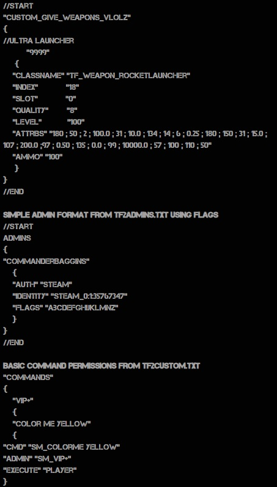

Anthony Bale
A Cyber security professional with strong communication & leadership skills.
Senior Technician at JTC Technology
Security Engineer Internship at AchieVR
Amazon web services Early Careers Innovation Participant
Barista at multiple locations
Branch Manager at Max Brenner
Tertiary Preparation Certificate (94.5 Atar)
Certificate IV Networking
Certificate IV Cyber Security
Advanced Diploma of Network Security
Bachelor of Cyber Security (current)
Physical health & body building
Mental health & mindset literature
Stocks, Shares & investing opportunities
Weekend motorcycle riding
The below topologies were developed as part of an overall project during the Advanced Diploma of Network security.
The task was to produce and implement a high level network design to support an enterprise network.
For reference, the topologies below are proof of concept designs to support the network of a stadium company

Wireless technology: WLC controlling WAP. WLC also acts as a dhcp server for WAP for connecting guest devices, operating on vlan 300
Voip: Telephony service within a dhcp pool assigned to voice. Includes QOS configuration & DSCP mapping for heavy applications such as video streaming.
Redundancy & Availability: Spanning tree priority on distribution layer switch 1 to assist with load balancing, Spanning tree portfast to reduce redundant network traffic HSRP configured for high availability in case of a router failure. Link aggregation for high bandwidth. Dedicated NATIVE & PARKING vlan
Named EIGRP: Configured R1 & R2 in AS 101 & configured redistribution between OSPF & EIGRP & used an ACL to block advertising .3 route between R2 & R1.
Security: Enabled routing protocol authentication to secure EIGRP IPv4 & IPv6 using SHA256.
BGP: remote-as configuration and neighbor association included to route between BGP. Assigned backup & primary interfaces for high availability


Zone Based Firewall: Inside to outside configuration including inside protocols (tcp,udp,icmp). Policy mapping, zone-pair security, service-policy (inspect) & zone members
Intrustion Prevention System Configured pubkey-chain & IPS rules. Enabled HTTP services & notification log, set categories & rules
Layer Two Switch Security: Basic Administration access control, SSH authentication & policy, AAA local authentication Vlan & trunking configuration, similar security to previous switching example
Adaptive Security Appliance Firewall (VPN) Configured for remote access using ASDM. Configured IPsec & IKE protocols, VPN tunnel forwarding & VPN security.
Most of my previous pen-testing work can't be displayed publically, however you can see some of my methods and ideas below:
Surveillance (nmap, web analysis, Sniffing)
Exploitation (Msfconsole, searchsploit, Ddos, Brute, SQLI)
Post (persistence, priv escalation, piveting)
Social Engineering (Malicious hardware, SEToolkit, BeEF)


Identification, Containment, Eradication/Remediation & Recovery
Lead an Incident Response Exersise whereby a scenario incident had taken place as the final project for Certificate IV Cyber Security.
Worked in a team to set deliverables, communicate to stakeholders, develop both red and blue books & perform incident reponse as realistically as possible.
Faced with brute force attacks, exposed vulnerabilities & denial of service attacks within a simulated cyber breach performed by other students

Develop php landing page from a web server as a listener and grabber
Develop more advanced scripts with Ducky (point to php serv)
force MITM using rogue wireless access point at a physical location
A mentor of mine once said that in order to understand IT, you need to live & breath IT.
Below you can see a range of IT related projects that i've worked on for my own personal development
Python, Javascript, HTML5 used to create this web page. Beyond HTML, have worked on automation projects linked to web applications & plan to further develop web skills
in order to utilize pen testing tools. i.e. listener page for Kali exploits, PhP landing page for physical exfiltration
There is more fun in hosting & configuring plugins for a game server than playing the actual game. Previously hosted a sourcemod server which held 2k+ players monthly. The game server featured many custom made plugins and an expansive list of web based donor features and upgrades which ended up being a profitable project. Today i host a few simple modded game servers for fun between whitelisted people.
Worked with Julian to create a strong home network with multiple firewalls, vlans & DMZ/LAB zones. The home network setup currently holds 100+ IoT devices and is configured for high security & availability. holding several access points & layer three switches, Our home network environment rivals many large enterprise models. Includes many automation ITTF tasks, motion detection, timing events and API's.
IDE: Visual Studio Code, Eclipse, Pycharm, Atom, vi/vim/nano
Scheduling: Kanban, Jira suite, Automation, Notion
Version Control: Bitbucket, Github
Languages: Javascript, Python, HTML5
CLI: Linux, Cisco
